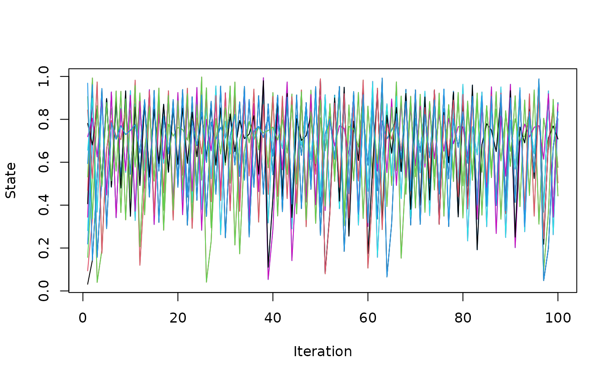

Simulates a one-dimensional periodic lattice of diffusively coupled logistic maps. The R implementation is the reference specification; use simulate_coupled_map_lattice_cpp() for the same dynamics with the update loop evaluated in C++.
Usage
simulate_coupled_map_lattice(
n,
lattice_size = 32L,
r = 4,
coupling = 0.2,
x0 = NULL,
noise_sd = 0
)
simulate_coupled_map_lattice_cpp(
n,
lattice_size = 32L,
r = 4,
coupling = 0.2,
x0 = NULL,
noise_sd = 0
)Arguments
- n
Integer. Number of lattice states to return, including the initial state.
- lattice_size
Integer. Number of sites. Must be at least 3.
- r
Numeric. Logistic-map parameter in [0, 4]. Defaults to 4.
- coupling
Numeric. Diffusive coupling strength \(\varepsilon\) in [0, 1]. Defaults to 0.2.
- x0
NULL, a numeric scalar, or a numeric vector of length lattice_size. A scalar is replicated across sites.
- noise_sd
Numeric. Standard deviation of additive Gaussian noise applied independently to every site after each update. Defaults to 0.
Value
A numeric matrix with n rows and lattice_size columns. Row 1 is the initial lattice state and subsequent rows are successive iterations.
Details
For site \(i\) and iteration \(t\), the update is $$x_i^{(t+1)} = (1 - \varepsilon) f(x_i^{(t)}) + \frac{\varepsilon}{2}\{f(x_{i-1}^{(t)}) + f(x_{i+1}^{(t)})\},$$ where \(f(x) = r x (1 - x)\). Site indices use periodic boundary conditions. Optional Gaussian perturbations are added after the coupled deterministic update.
When x0 is NULL, the initial state is a deterministic set of distinct values in (0, 1), which avoids the permanently synchronized orbit produced by a constant initial state.
References
Kaneko, K. (1984). Period-doubling of kink-antikink patterns, quasiperiodicity in antiferro-like structures and spatial intermittency in coupled logistic lattice. Progress of Theoretical Physics, 72(3), 480-486.
Examples
x <- simulate_coupled_map_lattice(
n = 100,
lattice_size = 16,
r = 4,
coupling = 0.2
)
matplot(x, type = "l", lty = 1, xlab = "Iteration", ylab = "State")
